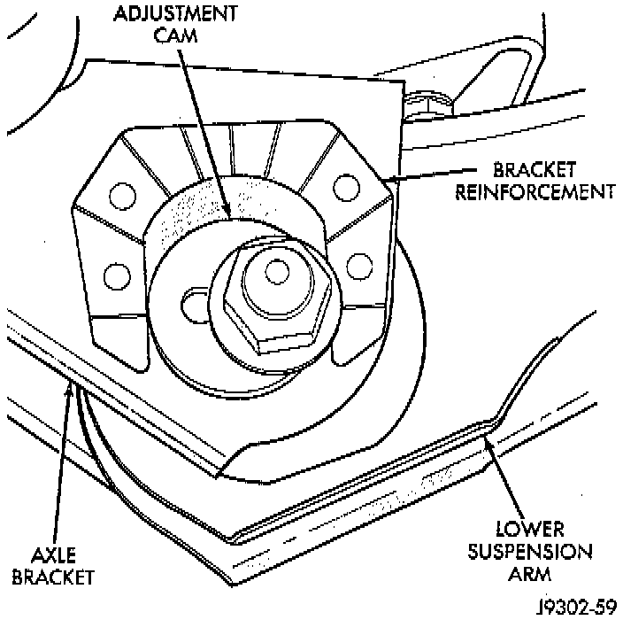
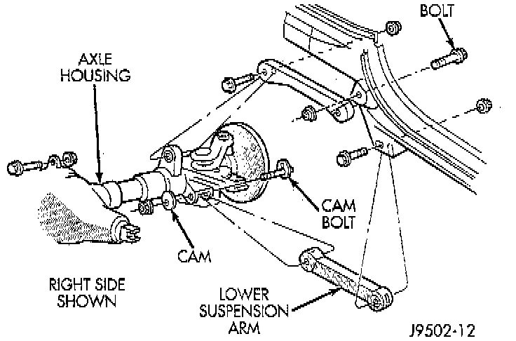

Lower
REMOVAL1. Raise and support the vehicle.

2. Paint or scribe alignment marks on the cam adjusters and suspension arm for installation reference.

3. Remove the lower suspension arm nut, cam and cam bolt from the axle.
4. Remove the nut and bolt from the frame rail bracket and remove the lower suspension arm
INSTALLATION
1. Position the lower suspension arm at the axle bracket and frame rail bracket.
2. Install the rear bolts and finger tighten the new nuts.
3. Install a new cam bolt, cam and new nut in the axle. Re-align the reference marks.
4. Install the bolts and finger tighten the new nuts.
5. Lower the vehicle.
6. Tighten the axle bracket nut to 115 Nm (85 ft. lbs.).
7. Tighten the frame bracket nut to 176 Nm (130 ft. lbs.).
8. Check the alignment if new parts were installed.